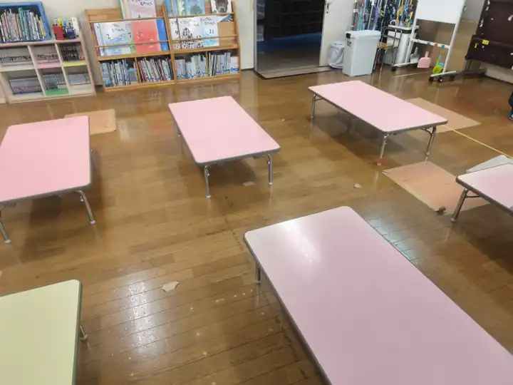
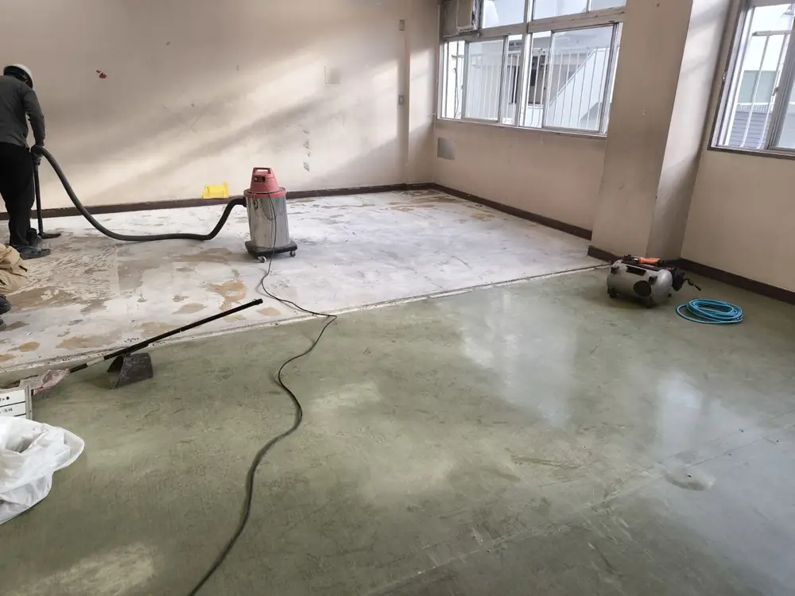

事前調査・解体工事の記録
施工前はテーブルが配置されていた室内で、当社は石綿（アスベスト）の事前調査と既存床の解体を担当しました。写真は施工前、当社の解体完了時、その後の施工後という3段階の記録です。床の張り替え・仕上げなどの後工程は、当社の担当工事として掲載していません。


事前調査を担当した事例としてご紹介しています。石綿の含有有無・分析結果や、石綿除去工事の施工について未確認の内容は記載していません。
CONSTRUCTION RECORD / 石綿事前調査・部分解体
石綿（アスベスト）の事前調査と室内既存床の解体を当社が担当した施工記録。施工前・解体完了・施工後の写真と当社の担当範囲を紹介します。
施工前はテーブルが配置されていた室内で、当社は石綿（アスベスト）の事前調査と既存床の解体を担当しました。写真は施工前、当社の解体完了時、その後の施工後という3段階の記録です。床の張り替え・仕上げなどの後工程は、当社の担当工事として掲載していません。


事前調査を担当した事例としてご紹介しています。石綿の含有有無・分析結果や、石綿除去工事の施工について未確認の内容は記載していません。
工事の対象箇所、目的、施工条件、必要な許可区分、他業者との分担などを伺い、対応できる範囲を個別に検討します。このページには、未確認の工期・数量・性能・費用などの数値は掲載していません。
既存建物・室内の部分解体や石綿事前調査について、工事内容と現場条件を伺い、対応範囲をご案内します。
工事について相談する →